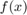
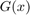
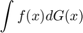
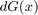
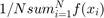

GPUs for Economists
GPUs can provide substantial increases in computation speed for some applications common in Economics, over the use of CPUs, or even CPUs in parallel. But knowing when and where GPUs will speed computation is key to their use. Loosely, when a calculation can be parallelized, and when each of the smaller parallelized calculations are simple, GPUs will provide major speed increases.
We begin by describing GPUs and parallelization. We then discuss how GPUs work, with a focus on their differences from (parallel) CPUs. The similarities and differences between GPUs and (parallel) CPUs will be explained in stages allowing us to look at examples of where and how these differences can matter. We also give a brief description of the kinds of GPU are available for purchase; some are better for scientific computing.
Contents
- GPUs: How are they different? Part 1: Parallelization
- Is it Parallelizable?
- GPUs: How are they different? Part 2: Speed of the individual processors.
- Different Algorithms
- GPUs: How are they different? Part 3: Shared memory vs seperate memory.
- GPUs: How are they different? Part 4: Leftovers.
- Overhead: Why parallelization is not always better.
- Hybrid computing: GPUs and CPUs together.
- Which GPU to Buy?
GPUs: How are they different? Part 1: Parallelization
Fundamentaly both GPUs and CPUs perform calculations in the same way: combining 0s and 1s using logic gates such as AND, OR, and NOT. Any calculation that can be done on a CPU can be done on a GPU, and vice-versa. The differences are entirely related to the speed at which different computational tasks will be performed.
A CPU contains a single processor which performs one operation at a time, and does that single operation quickly. Multiple operations on a CPU are simply performed one after another. Using CPUs in parallel ---a standard laptop today might have four CPUs, so four processors--- we instead perform multiple operations at a time. For example to perform 40 operations on four parallelized CPUs we can perform ten operations one after another on each of the four CPUs. So we can do the same calculation 4 times faster than performing all fourty operations one after another on a single CPU; although in practice the actual speed gain is never quite this high (never linear in the number of processors).
A GPU contains thousands of processors, meaning that thousands of operations can be performed at one time. The catch is that each of these processors is much weaker/slower than the processor found in a CPU.
So for calculations that are \textit{embarassingly parallel} ---large numbers of operations each of which is simple and can be performed in parallel--- GPUs will be much faster than CPUs. If calculations can be parallelized but each operation is complex then parallel CPUs will be faster. For some calculations each operation necessarily depends on the results of previous calculations, these will not be parallelizable.
We begin by explaining the concept of parallelization itself.
Is it Parallelizable?
To make these concepts concrete let's look at some trivial examples of each.
Simulating an AR(1) (auto-regressive of order one) process is not parallelizable. An AR(1) process is defined by Say we want to simulate this AR(1) process for 100 periods. Clearly to compute we have to have already calculated ; eg., computing requires that we have already computed . So each step necessarily depends on the results of the previous calculation. This is \textit{not} parallelizable.
In contrast consider simulating and i.i.d. (independent and identically distributed) process. For example, Say we want to simulate 100 draws from this (standard normal) i.i.d. process. Each draw is independent of all the other draws; eg., computing the fourth draw does not require that we have already computed the third draw. So each step is independent of the results of the other calculations. This is parallelizable.
Once we know a calculation seems like it will benefit from parallelization we have two choices: parallel CPU or a GPU.
GPUs: How are they different? Part 2: Speed of the individual processors.
Should we parallelize on multiple CPUs, or on the GPU?
The first thing to consider when you want to parellize and are trying to decide between multiple CPUs or GPU is how complex is each individual task. If each individual task is simple, the GPU is likely faster, if each task is quite complex parallel CPUs are likely faster.
For example, consider simulating i.i.d. data vs simulating panel data.
Simulated i.i.d. data will involve creating many random draws, each of which is independent of the others. A single random draw is a simple task and so this will be performed well by the GPU; large number of independent simple tasks.
Simulated panel data also involves creating many independent objects in the cross-section dimension, but each of these objects is a time series and so is not so simple. This is likely to perform well on parallel CPUs; large number of independent but not-so-simple tasks.
Often a hybrid can work better than. For example when simulating panel data we need to randomly draw initial states. Initial states are typically independent of one another so we can use GPU to draw the initial states, then switch to parallel CPUs and simulate each of the time series that makes up the panel from there. The GPU will perform the random number generation faster than the CPUs could and may be worth the overhead involved. We will return to hybrids later on. [This particular example is unlikely to be worth the overhead, but the general idea is sensible.] [In practice you could actually probably do much better when creating a simulated panel dataset by vectorizing the independent agents dimension and then iterating on this. This might even make the gpu the fastest. As this example illustrates it is not always easy to tell in advance which dimension you should parallelize.]
Let's see some examples to illustrate
First, creating some iid numbers with normal distribution, mean 3, and standard deviation 0.6 [randn() creates standard normal numbers, that is mean 0 and standard deviation 1. We can convert these to N(mu,sigma^2) by multiplying by sigma and adding mu]
N=10^4; tic; % Create an N-by-N matrix of random numbers each iid with N(3,0.6^2) distribution. A_noparallel=3+0.6*randn(N,N); toc A_parallelcpu=nan(N,N); tic; % Create the same thing using parallel cpus. parfor j=1:N A_parallelcpu(:,j)=3+0.6*randn(N,1); end toc % Not worthwhile as the overhead incurred in splitting things up and % sending them back and forth to the different cpus was slow compared with % actual runtime of each operation. tic; % Create same matrix on gpu. A_gpu=3+0.6*randn('gpuArray'); toc % This involves simple tasks, and lots of them. gpu is good at this. % Notice from previous three examples how for something like this where the % operations are very simple and perfectly parallelizable we get that gpu % beats cpu beats parallel cpu. % Notice from comparing these with following two examples how creating the object you want in % the wrong place (because it might be faster) and then transferring it to % where you want it can often be notably slower due to the overhead % incurred in moving things back and forth. tic; % Create on cpu then move to gpu. A_noparallel=3+0.6*randn(N,N); A_gpu=gpuArray(A_noparallel); toc tic; % Create on gpu then move to cpu. A_gpu=3+0.6*randn('gpuArray'); A_noparallel=gather(A_gpu); toc % While creating on gpu tends to be faster, the time lost in moving it to % cpu means that if we want to work with it on cpu it will sometimes be % worth creating it there even though ignoring the moving this would be % slower. % Now an example of simulating a time-series. cpu can beat gpu here since % there is nothing to parallelize. T=10^5; c=2; rho=0.9; tic; timeseries=nan(T,1); timeseries(1)=c/(1-rho); for t=2:T timeseries(t)=c+rho*timeseries(t-1)+randn(1,1); end toc tic; timeseries_gpu=nan(T,1,'gpuArray'); timeseries_gpu(1)=c/(1-rho); for t=2:T timeseries_gpu(t)=c+rho*timeseries_gpu(t-1)+randn(1,1,'gpuArray'); end toc % Actually in both cases the speed could be improved by precomputing the % random numbers and then just grabbing them one-by-one. Compare to: tic; timeseries=nan(T,1); timeseries(1)=c/(1-rho); shocks=randn(T,1); for t=2:T timeseries(t)=c+rho*timeseries(t-1)+shocks(t); end toc % Note: This is lazy code. I actually create one more 'shocks' value than needed [shocks(1) is unused.] % [Side commentary: Computers do not understand the concept of randomness and can never do anything actually random. % Whenever we ask the computer to generate a random number there is actually nothing random about what % happens. The computer simply already has a long list of numbers and just gives us the next number from this list. % The list was carefully created so that when drawn in order have all the % properties we would expect of random numbers. In reality though the list is entirely deterministic and nothing % random is actually happening; https://en.wikipedia.org/wiki/Random_number_generation % When people talk about setting the 'seed' of a random number generator they mean the point in the list from % which we start.] % % Note: my use of nan() is slower than using, e.g., zeros(). I like to do it when writing codes just because it will throw errors if you % don't do the right thing (e.g., you miss one of the elements for some reason) while something like zeros() or ones() will % still run, but give wrong numbers. Sometimes you won't realise the numbers are wrong until you have wasted a lot of your own time. % Compare: tic; zeros(N,N); toc tic; nan(N,N); toc
Elapsed time is 1.202049 seconds. Starting parallel pool (parpool) using the 'local' profile ... connected to 2 workers. Elapsed time is 20.024481 seconds.
There is a problem with the CUDA driver or with this GPU device. Be sure that you have a <a href="matlab:web('http://www.mathworks.com/gpudevice','-browser')">supported GPU</a> and that the <a href="matlab:web('http://www.mathworks.com/gpudriver','-browser')">latest driver</a> is installed.
Error in GPUsForEconomists (line 104)
A_gpu=3+0.6*randn('gpuArray');
Caused by:
The CUDA driver could not be loaded. The library name used was 'libcuda.so.1'. The error was:
libcuda.so.1: cannot open shared object file: No such file or directorDifferent Algorithms
Many problems can be solved with any of a number of different algorithms. One of these algorithms might be parallelizable and another one not. One algorithm might be better parallelized on the GPU and another on CPUs.
An example is numerical integration. Take the case of calculating the expected value of a function of an i.i.d. random variable. That is, we have a function  and want to integrate it with respect to some cumulative distribution function . The computational problem to be solved is that to calculate the value of $ There are two main approaches: quadrature methods or monte-carlo methods. Quadrature tends to be better for GPU, monte-carlo for CPUs.
Both quadrature methods and monte-carlo methods for numerical integration are based on observing that an integral is like a weighted sum. (Recall from calculus that integrals are defined as the sum of rectangles of a certain width as that width goes to zero and the number of rectangles goes to infinity.)
Quadrature methods: Just pick a finite number of values of and solve the resulting problem of calculating a weighted sum. The computation of a weighted sum is just a vector multiplication (row vector times column vector ), and so will be fast on the GPU. Quadrature methods are simply ways of figuring out how to choose the finite values of so that evaluting this weighted sum will give us a good approximation of the integral. The most common quadrature method in economics is the Tauchen method for approximating AR(1) processes with normally distributed shocks (when the autoregressive parameter is zero it simplifies to a method for approximating normally distributed shocks which could be used to solve a problem like the one we are considering here).
Monte-Carlo Integration: Say we have access to a programming command called 'DrawFromG()'. Then we can simply take advantage of laws of large numbers that tell us that  will converge to the integral. (We normally think of laws of large numbers as being about sample and population moments, but they are just as much about finite sums and integrals). Many programming languages contain commands for generating random numbers from common probability distributions. To implement this we will want to draw a value, update our sum, and then check if the sum has converged. If it has converged we are done. If not, draw another value and repeat. Notice that this requires us to already have the previous value of the sum and so cannot be parallelized.
In our simple example the monte-carlo could have been partly parallelized (make 100 draws each time) and done by iterating on GPU, but if the state was an AR(1) process, rather than i.i.d., then this would no longer be the case and the advantages of using CPUs for monte-carlo become clearer. [Quadrature for GPU and Monte-Carlo for CPU is not always the best, but in many applications will be.
GPUs: How are they different? Part 3: Shared memory vs seperate memory.
There is another concern we should consider when deciding between using a GPU or parallel CPUs. GPU processors have access to a single shared memory. Parallel CPU processors have access to seperate memories.
[The term shared memory is also used to refer to the completely different concept of using the same memory addressing across all the memory of both the CPUs and GPUs in a computer. The two should not be confused, despite the confusion of having the same name.]
How does this matter in practice? Say we have a large number of independent calcuations, all of which need access to some matrix D (D might be a probability distribution from which we want to take a random draw). If we use the GPU we can make one copy of D in the shared memory and all of the GPU processors will have access to it. In contrast a naive parallel CPU implementation would see us sending a seperate copy of D to each one of the CPUs.
(Technically the GPU does not have a single shared memory, instead it has 'blocks' each associated with a number of processors. The objects in memory are then 'tiled' across the blocks. This level of detail is hidden from you in many programming languages and so we won't consider it here. It does matter though: the previous example of random draws from D is not a great one because it may involve all the GPU processors wanting to access the same part of matrix D, rather than the part 'tiled' to their 'block'. Shared memory on GPU really works when each GPU processor is only accessing the part of matrix D tiled to it's block. A better example in Economics would be 'policy functions', a.k.a. 'decision rules'. Often a GPU processor will only need to access the value of the policy function that is relevant to a specific part of the state space of the economic model. The policy function matrix D can thus be tiled such that each processor has access to the part of D relevant to it's part of the state space.)"
GPUs: How are they different? Part 4: Leftovers.
Amount of memory available. GPUs normally don't have as much memory as CPUs. This means that some tasks which the GPU might otherwise be faster than the CPU on will be better done on the CPU simply as it can store larger objects in memory. Given that the amount of memory on a typical GPU or CPU is a moving target --increasing yearly-- I won't provide a specific example here as it would be out of date in a few years.
Overhead: Why parallelization is not always better.
Moving objects back and forth between GPU and CPU, or sending jobs to parallel CPUs, takes time. This time is lost, in the sense that nothing is being computed during the time spent transferring objects. We call this lost time 'overhead'.
The main lesson of 'overhead' is that sometimes it is faster not to parallelize, and not to switch between CPU and GPU. For example, say we have a matrix that is currently stored in memory. We want to multiply this matrix by 5. If the matrix is in GPU memory and we perform the whole calculation on the GPU then this would be faster than if the matrix in CPU memory and we perform the whole calculation on the CPU. But this does not mean that if the matrix is currently in CPU memory then we should move it to the GPU and perform the calculation there because we know that the GPU can perform this task faster. Moving the matrix from CPU to GPU memory incur 'overhead', lost time while the matrix is being transferred. It may be that overhead plus the time to do the calculation on the GPU will end up slower than just doing the calculation on the CPU.
When will overhead be large enough that you don't want to parallelize? Mainly when the dimension along which you are hoping to parallelize is not that big, so the potential gains from parallelization were never that big to begin with.
Hybrid computing: GPUs and CPUs together.
Sometimes incurring the overhead is worth it and you want to switch back and forth between CPU and GPU within the same problem.
For example stationary distribution of agents. Obviously overhead is a concern.
Supercomputers nowadays sometimes are made up of multiple clusters, each of which contains a number of CPUs together with a GPU. So parallelization can occour at multiple levels (across clusters, and within a cluster across CPUs or on GPU) while specific tasks within a given level can use GPU or CPUs where appropriate (with a cluster, can switch back and forth between CPUs and GPU). Brumm & Scheideger is an example of this.
Asynchronous parallelization. All the examples described so far are based on synchronous processors: a bunch of parallel CPUs all running at the same time (or all the processors on a GPU running at same time). An alternative is asychronous processors, the number of parallel CPUs changes over time as more or less of them become available. There is only one reason you would want to use these in reality, they are much cheaper! Come in two main forms. First, some institutions have latex\textit{cycle-harvesting}<\latex> software installed on all their desktops, so when people are not using their computer it's spare computation cycles are harvested as part of a 'supercomputer'. Second, cloud services like Amazon's AWS and Microsoft Azure tend to sell their spare cycles much cheaper than they sell standard computing power (you can even set up your codes to only run when price falls below a certain price per cycle). They have seen some, but not much, use in Economics and Finance. Cai, Judd etc Condor paper. Toby Daglish?
Which GPU to Buy?
When using GPUs for computational economics there are two main concerns.
Computational uses of GPUs rely on a set of codes called CUDA. Only NVIDIA GPUs work with CUDA (CUDA was specifically developed by NVIDIA for the purpose of making GPUs useful for general computation, rather than just computer graphics as had previously been the case). This means GPUs made by AMD, Intel, or others simply cannot presently be used for computational purposes. Virtually all NVIDIA GPUs nowadays work with CUDA, but make sure to double check before you purchase one.
The second concern relates to double floating point numbers. For most scientific purposes being able to accurately store large numbers (or equivalently, those with many decimal points) is important. Simplifying slightly, double floating point numbers are accurate to , while single floating point numbers are only accurate to . So for most computational purposes we would prefer double floating point precision. NVIDIA realised many years ago that computational users had more money than gamers, so they handicapped all gaming GPUs to mostly only do single floating point numbers, and then charged much higher prices for those cards capable of serious double floating-point calculations. In short, the Tesla line of GPUs cost much more but are capable of serious double floating-point calculations. Whether you want to pay this higher price, or are satisfied with the cheaper single floating-point precision GPUs ---eg. GeForce--- is up to you.